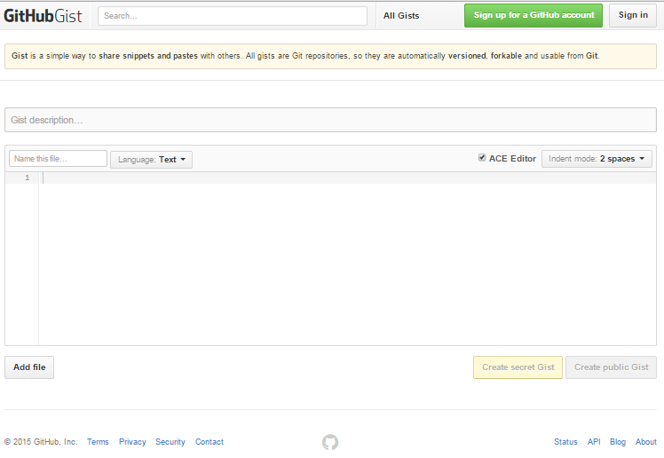
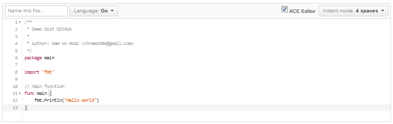
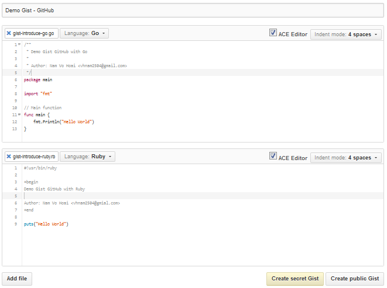
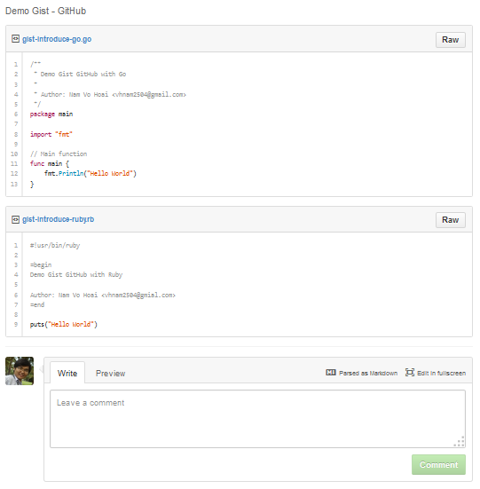
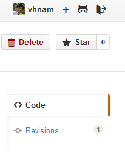
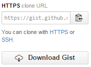
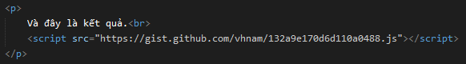
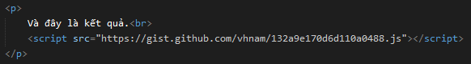
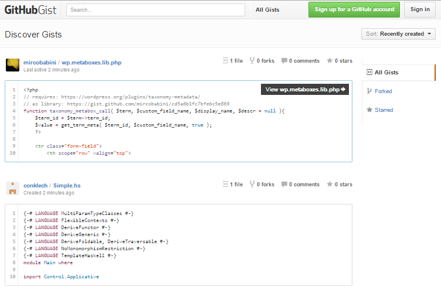
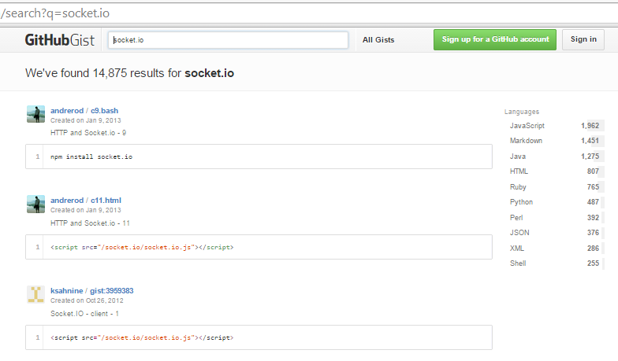

Hôm nay, mình sẽ giới thiệu về Gist. Gist là một dịch vụ tuyệt vời mà bất cứ lập trình viên nào cũng nên biết.
Gist là dịch vụ chia sẻ code trực tuyến của GitHub, nó giống như một Text Editor trực tuyến vậy. Nếu ai đã từng sử dụng qua http://codepad.org hoặc http://pastebin.com/ thì về cơ bản, Gist cũng giống vậy nhưng nó còn hỗ trợ một số chức năng khác giúp ích cho người dùng.
Căn bản là Gist là một text editor online. Gist có hỗ trợ ACE Editor để giúp bạn chia sẻ source code trên đây.
Gist hỗ trợ cho bạn rất nhiều ngôn ngữ lập trình phổ biến hiện nay như C, C++, Java, PHP, JavaScript,... ngôn ngữ lập trình mới như Go, Swift, Dart, CoffeeScript, Zephir,... và cả những định dạng khác như XML, YAML, JSON,... Bạn nhấn vào combobox Languages sẽ thấy rõ.

Trong lúc viết code, bạn sẽ để ý tới phần indent. Vì một số ngôn ngữ lập trình họ đặt ra một cái chuẩn sử dụng 2 space indents, một số khác lại 4 spaces indents. Hoặc một số lập trình viên, muốn code của họ trông dễ hiển thị hơn với Tabs mà không Spaces. Gist hỗ trợ bạn trong vấn đề này.

Bạn để ý ô checkbox ACE Editor. Nếu bạn check thì code của bạn sẽ được hỗ trợ highlight.

Còn đây là không sử dụng ACE Editor. Gist hiển thị như là một thẻ textarea.

Nút Add file ở phía dưới, giúp bạn tạo thêm một file. Nhưng khi lưu, nó sẽ hiển thị tên theo tên file đầu tiên.
Để lưu lại, bạn nhấn vào nút Create secret Gist hoặc Create public Gist. Với Create secret Gist, file này không thể tìm được bằng Search Engine và ai muốn truy cập thì bạn phải đưa URL cho người đó. Với Create public Gist thì bạn dễ dàng tìm được bằng Search Engine.
Nếu có ý kiến gì với đoạn code, Gist có hỗ trợ cho bạn viết comment ngay tại chỗ, với điều kiện bạn phải đang đăng nhập tài khoản GitHub.
Bạn muốn copy đoạn code về, đơn giản chỉ việc nhấn vào nút Raw sẽ hiển thị code thuần bằng một cửa số/tab mới. Tại vì khi bạn copy cả đoạn ngay tại chỗ, sẽ tốn thời gian di chuyển chuột.

Còn nếu thay code này chất lượng thì cứ nhấn vào nút Star ở góc trên phải, với điều kiện là bạn phải đang đăng nhập tài khoản GitHub.
Bạn có thể download về khi nhấn nút Download Gist. Hoặc clone về bằng giao thức HTTPS/SSH.
Ngoài ra, nếu bạn muốn nhúng đoạn code vào website thì chỉ đơn giản là tìm đến khung Embed URL, copy đoạn HTML đó và dán vào nơi cần chèn.
 

Và đây là kết quả.
Bạn nhấn vào nút All Gists bên phải khung tìm kiếm để tới trang Discover Gists. Hoặc là bạn tới trang https://gist.github.com/discover.
Tại đây, bạn có thể tìm kiếm source code thỏa thích.
